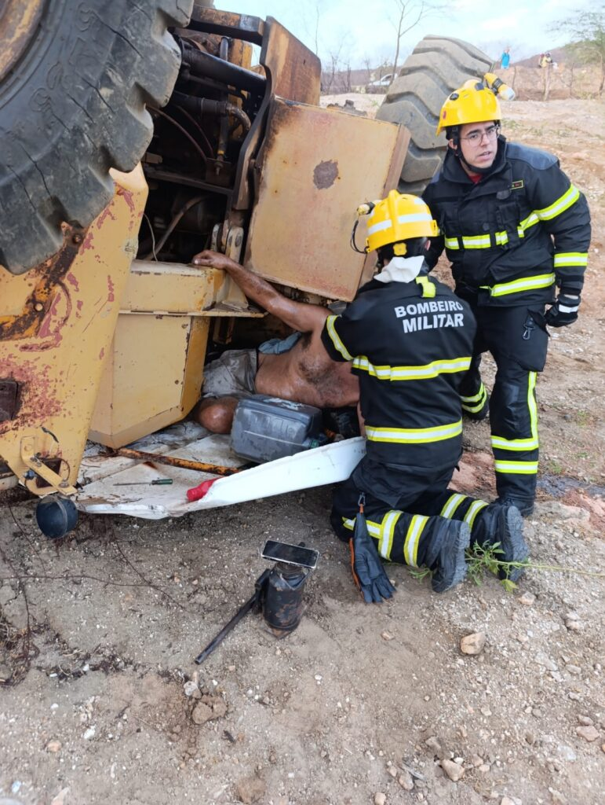

Últimas Notícias & Blog
Todo evento que acontece na cidade, passa por aqui!

Currais Novos entrega mais ruas pavimentadas
Os moradores dos bairros JK e José Dantas celebraram, nesta quarta-feira (21), a entrega oficial de três vias totalmente revitalizadas pela Secretaria de Infraestrutura de Currais Novos. As ruas contempladas foram a Antônio Ferreira, a Sargento Geraldo Lima de Araújo e a Reginaldo Carneiro. Acompanhado pela vereadora Leilza, o Prefeito Lucas Galvão destacou que as obras dão continuidade ao legado do programa Avança Currais. Idealizado pelo ex-prefeito Odon Jr. O programa segue transformando a face urbana do município e fortalecendo o desenvolvimento dos bairros periféricos com investimentos estratégicos em pavimentação e serviços.
Jantar de Festa dos Santos Reis, em Currais Novos, servirá mais de 1.000 pessoas
O bairro Sílvio Bezerra de Melo celebra neste sábado (10/01/26) o auge da Festa dos Santos Reis Magos, a primeira celebração comunitária do ano. As 19h será o início da novena, logo após será o Grande Jantar da Comunidade com música ao vivo, com a expectativa de servir mais de 1.000 pessoas. As senhas podem ser adquiridas antecipadamente com a organização ou diretamente no local, o evento é aberto a toda a população.

Bombeiros resgatam operador preso em ferragens após tombamento de máquina
Na tarde desta quarta-feira (21), o Corpo de Bombeiros de Currais Novos realizou um resgate complexo às margens da rodovia que liga o município a São Vicente. Por volta das 17h10, uma pá carregadeira tombou em um barranco, deixando o operador preso às ferragens pela região do tornozelo. A equipe de resgate chegou ao local em apenas dez minutos. Devido à gravidade da compressão no membro inferior, que apresentava fratura, os militares aplicaram um torniquete preventivo para evitar complicações maiores, como a síndrome compartimental. Após o corte da estrutura da máquina, a vítima foi estabilizada e levada ao Hospital Regional Mariano Coelho, onde segue em observação.

Milena Galvão visita obra que vai transformar Pronto Atendimento em Hospital Municipal
As obras de transformação do Pronto Atendimento em Hospital Municipal seguem em ritmo acelerado em Currais Novos. A vice-prefeita Milena Galvão esteve no local para fiscalizar os trabalhos e ouvir os pacientes que continuam sendo atendidos durante o período de reformas. Com a nova estrutura, a rede pública de saúde ganha um reforço estratégico. O futuro hospital contará com uma Sala Vermelha ampliada, duas enfermarias, salas de triagem e pediatria, além de espaços dedicados a procedimentos de sutura e medicação. O objetivo da gestão é oferecer um serviço hospitalar completo e humanizado, com funcionamento ininterrupto e uma equipe multidisciplinar reforçada para atender a demanda do município.
Festa de Santana
As obras de transformação do Pronto Atendimento em Hospital Municipal seguem em ritmo acelerado em Currais Novos. A vice-prefeita Milena Galvão esteve no local para fiscalizar os trabalhos e ouvir os pacientes que continuam sendo atendidos durante o período de reformas. Com a nova estrutura, a rede pública de saúde ganha um reforço estratégico. O futuro hospital contará com uma Sala Vermelha ampliada, duas enfermarias, salas de triagem e pediatria, além de espaços dedicados a procedimentos de sutura e medicação. O objetivo da gestão é oferecer um serviço hospitalar completo e humanizado, com funcionamento ininterrupto e uma equipe multidisciplinar reforçada para atender a demanda do município.


{kind=link}
{kind=link}